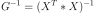
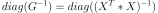
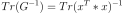
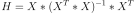
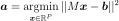
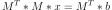

CholeskyMethod¶
-
class
CholeskyMethod(*args)¶ Least squares solver using Cholesky decomposition.
- Available constructors:
CholeskyMethod(proxy, weight, indices)
CholeskyMethod(proxy, indices)
Parameters: - proxy :
DesignProxy Input sample
- weight : sequence of float
Output weights
- indices : sequence of int
Indices allowed in the basis
See also
Attributes: thisownThe membership flag
Methods
computeWeightedDesign([whole])Build the design matrix. getBasis()Accessor to the basis. getClassName()Accessor to the object’s name. getCurrentIndices()Current indices accessor. getGramInverse()Get the inverse Gram matrix of input sample. getGramInverseDiag()Get the diagonal of the inverse Gram matrix. getGramInverseTrace()Get the trace of the inverse Gram matrix. getH()Get the projection matrix H. getHDiag()Get the diagonal of the projection matrix H. getId()Accessor to the object’s id. getInitialIndices()Initial indices accessor. getInputSample()Input sample accessor. getName()Accessor to the object’s name. getShadowedId()Accessor to the object’s shadowed id. getVisibility()Accessor to the object’s visibility state. getWeight()Accessor to the weights. hasName()Test if the object is named. hasVisibleName()Test if the object has a distinguishable name. setName(name)Accessor to the object’s name. setShadowedId(id)Accessor to the object’s shadowed id. setVisibility(visible)Accessor to the object’s visibility state. solve(rhs)Solve the least-squares problem. solveNormal(rhs)Solve the least-squares problem using normal equation. trashDecomposition()Drop the current decomposition. update(addedIndices, conservedIndices, …)Update the current decomposition. -
__init__(*args)¶ Initialize self. See help(type(self)) for accurate signature.
-
computeWeightedDesign(whole=False)¶ Build the design matrix.
Parameters: - whole : bool, defaults to False
Whether to use the initial indices instead of the current indices
Returns: - psiAk :
Matrix The design matrix
-
getClassName()¶ Accessor to the object’s name.
Returns: - class_name : str
The object class name (object.__class__.__name__).
-
getCurrentIndices()¶ Current indices accessor.
Returns: - indices :
Indices Indices of the current decomposition in the global basis.
- indices :
-
getGramInverse()¶ Get the inverse Gram matrix of input sample.

Returns: - c :
CovarianceMatrix The inverse Gram matrix.
- c :
-
getGramInverseDiag()¶ Get the diagonal of the inverse Gram matrix.

Returns: - d :
Point The diagonal of the inverse Gram matrix.
- d :
-
getGramInverseTrace()¶ Get the trace of the inverse Gram matrix.

Returns: - x :
Scalar The trace of inverse Gram matrix.
- x :
-
getH()¶ Get the projection matrix H.

Returns: - h :
SymmetricMatrix The projection matrix H.
- h :
-
getId()¶ Accessor to the object’s id.
Returns: - id : int
Internal unique identifier.
-
getInitialIndices()¶ Initial indices accessor.
Returns: - indices :
Indices Initial indices of the terms in the global basis.
- indices :
-
getName()¶ Accessor to the object’s name.
Returns: - name : str
The name of the object.
-
getShadowedId()¶ Accessor to the object’s shadowed id.
Returns: - id : int
Internal unique identifier.
-
getVisibility()¶ Accessor to the object’s visibility state.
Returns: - visible : bool
Visibility flag.
-
hasName()¶ Test if the object is named.
Returns: - hasName : bool
True if the name is not empty.
-
hasVisibleName()¶ Test if the object has a distinguishable name.
Returns: - hasVisibleName : bool
True if the name is not empty and not the default one.
-
setName(name)¶ Accessor to the object’s name.
Parameters: - name : str
The name of the object.
-
setShadowedId(id)¶ Accessor to the object’s shadowed id.
Parameters: - id : int
Internal unique identifier.
-
setVisibility(visible)¶ Accessor to the object’s visibility state.
Parameters: - visible : bool
Visibility flag.
-
solve(rhs)¶ Solve the least-squares problem.

Parameters: - b : sequence of float
Second term of the equation
Returns: - a :
Point The solution.
-
solveNormal(rhs)¶ Solve the least-squares problem using normal equation.

Parameters: - b : sequence of float
Second term of the equation
Returns: - x :
Point The solution.
-
thisown¶ The membership flag
-
trashDecomposition()¶ Drop the current decomposition.
-
update(addedIndices, conservedIndices, removedIndices, row=False)¶ Update the current decomposition.
Parameters: - addedIndices : sequence of int
Indices of added basis terms.
- conservedIndices : sequence of int
Indices of conserved basis terms.
- removedIndices : sequence of int
Indices of removed basis terms.